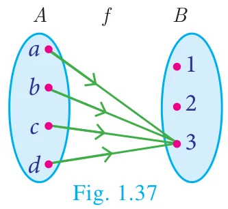
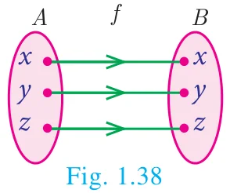
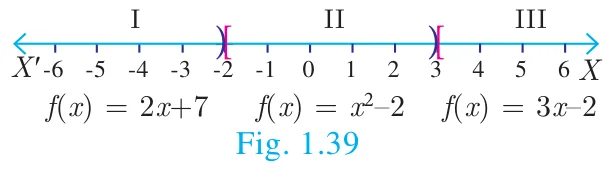

There are some special cases of a function which will be very useful. We discuss some of them below
(i) Constant function (ii) Identity function (iii) Real – valued function
(i) Constant function
A function \(f : A \to B\) is called a constant function if the range of \(f\) contains only one element. That is, \(f(x) = c\), for all \(x \in A\) and for some fixed \(c \in B\).
Illustration 16

From Fig. 1.37, \(A = \{a, b, c, d\}\), \(B = \{1, 2, 3\}\) and \(f = \{(a,3), (b,3), (c,3), (d,3)\}\). \(\because f(x) = 3\ \forall\ x \in A\),
Range of \(f = \{3\}\), \(f\) is a constant function.
(ii) Identity function

Let \(A\) be a non–empty set. Then the function \(f : A \to A\) defined by \(f(x) = x\) for all \(x \in A\) is called an identity function on \(A\) and is denoted by \(I_A\).
Illustration 17
If \(A = \{a, b, c\}\) then \(f = I_A = \{(a,a), (b,b), (c,c)\}\) is an identity function on \(A\).
Thinking Corner
Is an identity function one to one function?
(iii) Real valued function
A function \(f : A \to B\) is called a real valued function if the range of \(f\) is a subset of the set of all real numbers \(\mathbb{R}\). That is, \(f(a) \subseteq \mathbb{R},\ \forall\ a \in A\).
Progress Check
State True or False.
- All one – one functions are onto functions.
- There will be no one – one function from A to B when \(n(A) = 4\), \(n(B) = 3\).
- All onto functions are one – one functions.
- There will be no onto function from A to B when \(n(A) = 4\), \(n(B) = 5\).
- If \(f\) is a bijection from \(A\) to \(B\), then \(n(A) = n(B)\).
- If \(n(A) = n(B)\), then \(f\) is a bijection from \(A\) to \(B\).
- All constant functions are bijections.
Example 1.17
Let \(f\) be a function from \(\mathbb{R}\) to \(\mathbb{R}\) defined by \(f(x) = 3x - 5\). Find the values of \(a\) and \(b\) given that \((a, 4)\) and \((1, b)\) belong to \(f\).
Solution
\(f(x) = 3x - 5\) can be written as \(f = \{(x, 3x - 5) \mid x \in R\}\)
\((a, 4)\) means the image of \(a\) is 4. i.e., \(f(a) = 4\)
\(3a - 5 = 4 \Rightarrow a = 3\)
\((1, b)\) means the image of 1 is \(b\). i.e., \(f(1) = b\)
\(3(1) - 5 = b \Rightarrow b = -2\)
Example 1.18
If the function \(f : \mathbb{R} \to \mathbb{R}\) is defined by \(f(x) = \begin{cases} 2x + 7; & x < -2 \\ x^2 - 2; & -2 \le x < 3 \\ 3x - 2; & x \ge 3 \end{cases}\), then find the values of
(i) \(f(4)\) (ii) \(f(-2)\) (iii) \(f(4) + 2f(1)\) (iv) \(\dfrac{f(1) - 3f(4)}{f(-3)}\)
Solution

The function \(f\) is defined by three values in intervals I, II, III as shown by the side
For a given value of \(x = a\), find out the interval at which the point \(a\) is located, there after find \(f(a)\) using the particular value defined in that interval.
- First, we see that, \(x = 4\) lie in the third interval.
\(\therefore f(x) = 3x - 2;\ f(4) = 3(4) - 2 = 10\)
- \(x = -2\) lies in the second interval.
\(\therefore f(x) = x^2 - 2;\ f(-2) = (-2)^2 - 2 = 2\)
- From (i), \(f(4) = 10\).
To find \(f(1)\), first we see that \(x = 1\) lies in the second interval.
\(\therefore f(x) = x^2 - 2 \Rightarrow f(1) = 1^2 - 2 = -1\)
\(f(4) + 2f(1) = 10 + 2(-1) = 8\)
- We know that \(f(1) = -1\) and \(f(4) = 10\).
For finding \(f(-3)\), we see that \(x = -3\), lies in the first interval.
\(\therefore f(x) = 2x + 7\); thus, \(f(-3) = 2(-3) + 7 = 1\)
Hence, \(\dfrac{f(1) - 3f(4)}{f(-3)} = \dfrac{-1 - 3(10)}{1} = -31\)